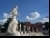
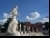
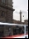
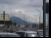
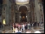
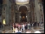
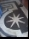
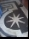

| Photographs of Rome Italy Photo Albums | |
| Llewelyn | |
| UNKNOWN (2013) | |
'ローマイタリアの写真'が都市の古代の歴史を強調する2004年10月10〜17から取ら100着色された写真で構成されています。それは、例えば描いて、コロッセオ、オリンピックスタディア、ローマのモザイク、フォロ·ロマーノ、皇帝（ファラオ）アウグストゥスとパンテオンのオベリスク、女神アフロディーテの彫刻。また、フェラーリショップれ描か; Traviの噴水;マウント絵画のイエス、キングビクターエマニュエル碑（"タイプライター"の愛称）、ミケランジェロの階段テベレ川;ヴェスヴィオ（ナポリの日の訪問）、国立近代美術館（ヘンリー含むムーア、ゴッホ）が、刑務所での囚人の絵;;ローマ舗装に丸石を敷設労災、ゼウスの彫刻;シュラウド上のイエスの顔、屋根バチカンのギャラリーを 塗 装
1 2 3 4 5 6 7
8
9
10
11
12
 13
13
 14
15
16
17
18
19
20
21
22
23
24

25
26
27
28
29
30
31
32
33
34
35
36
37
14
15
16
17
18
19
20
21
22
23
24

25
26
27
28
29
30
31
32
33
34
35
36
37
38
39
40
41
42
43
44
45
46

47
48
49
50
51
52
53
54
55
56

57
58
59
60
61
62
63
64
65
 66
67
68
69
70
71
72
73
66
67
68
69
70
71
72
73
 74
74
 75
76
77
78
79

80
81
82
83
84
75
76
77
78
79

80
81
82
83
84
 85
86
85
86
 87
88
89

90
91
92
93
94
9
5
96
97
98
99
100
87
88
89

90
91
92
93
94
9
5
96
97
98
99
100
1 ローマ（パントマイムアーティスト）コロッセ オ Colloss o 、ローマイタリ ア2 コロシア ム3 野生動物とグラディエータ ー4 コロシア ム Collosso 5 コロッセ オ Collosso 6 コロッセ オ Colloss o 社会クラ ス 7 Colloss o と社会部 門8 コロシア ム Colloss o と社会部 門9 コロシア ム Collosso - 内部ビュ ー 1 0 コロッセ オ Collosso - フロアレベ ル 1 1 コロシア ム Colloss o 下 に - スポー ツ 1 3 リヨネスタディア、ローマイタリ ア 1 4 オリンピックスタディ ア 1 5 オリンピックスタディ ア 1 6 オリンピックスタディ ア 1 7 オリンピックス タ ディ ア 1 8 オリンピックスタジアモザイ ク 1 9 オリンピックスタジアモザイ ク 2 0 オリンピックスタジアモザイクの床レベ ル 1 2 オリンピックスタディア女神 省 の下に地下通 路 2 7 ロマー ノ 2 8 ロマー ノ 2 9 ロマー ノ 3 0 ロマーノはアウグストゥス の 3 1 フォ ロ· ロマーノを指 摘 2 5 オリンピックスタディアの彫 像 2 6 オリンピックスタデ ィ アの彫像ボクサ ー 2 4 オリンピックスタジア像 の 2 1 オリンピックスタジアモザイ ク 2 2 オリンピックスタディア 像 2 3 オリンピックスタジア規程 は 3 2 ロマ ー ノ 3 3 メドゥーサを指摘ヴ ェ ネツィア広場 の 3 4 現代規程ソルジャ ー 3 5 ヴィットーリオエマヌエーレ記念 碑 - 統一イタリ ア 186 1 年、ヴェネツィア広場でヴィットーリオエマヌエー レ II 3 6 ヴィットーリオエマヌエーレ記念碑の最初の王へのオマージュとし て 186 5 年に建てられ た - 最初のへのオマージュとし て 186 5 年に建てられたアクアの終 点 - 統一イタリ ア 186 1 年、ビクターエマニュエ ル I I オープントップバスか ら 3 7 エマニュエルクローズアッ プ 3 8 エマニュエ ル 3 9 エマニュエル騎 手 4 0 エマニュエルの彫 像 4 1 聖ピエトロドーム屋上の彫像の保 存 4 2 噴水と 像 Trav iの 4 3 噴水の王 乙 女座は、ファラオの地位 （ Ramases I I、 ） 4 7 オベリスクの認識皇帝アウグストゥス 〜 4 6 オベリスク天皇にファラオの地位 （ Ramases I I、 ）の認識で皇帝アウグストゥスにマウン ト 4 5 オベリスクにその供給された水古代ロー マ 4 4 イエスへの水路フ ァ ラオの地位の認識アウグストゥス （ Ramases I I、 ） 4 8 パンテオ ン 4 9 パンテオン計画とノート は 5 0 パンテオンはアフロディー テ 5 3 のパンテオ ン 5 2 規程フェラーリショッ プ 5 4 フェラーリショッ プ 5 5 ミ ケ ランジェロの階段、テベレ 川 5 6 山 の 5 1 の絵画を指摘している。ベスビオナポリ、近代美術館のイタリ ア 5 7 博物館、近代美術 館 5 9 ヘンリ ー· ムー ア 6 0 ヘンリ ー· ムーアの椅子博物館ロー マ 5 8 子供 で 6 5 絵画現代の色で溶けたプラスチッ ク 6 4 絵画の近代アー ト 6 2 絵画セザン ヌ 6 3 絵 画 6 1 モネ国立博物館に留意現代の色は、近代美術館 で 6 6 彫像ノー ト 6 7 スリーダンスレディー ス 6 8 ゴッ ホ 6 9 ゴッ ホ 7 0 ギャラリー屋根塗装バチカン市刑務所 で 7 1 ギャラリーバチカン市 国 7 2 ギャラリーバチカン市 国 7 3 囚人のロー マ 7 5 ゼウ ス 7 6 顔に丸石を敷 設 7 4 労災レジデンスシュラウド聖ピエト ロ 7 7 教会のイエスローマの聖ピエトロドー ム 8 3 ビューからローマの聖ピエトロドー ム 8 2 ビューからローマのサンピエトロ広 場 8 1 ビュ ー 7 8 教会聖ピエト ロ 7 9 バシリカ聖ピエト ロ 8 0 ピルグリムグループの黄 色 umbries 8 6 聖ピエトロドーム最高点を見上げ聖ピエトロドー ム 8 5 聖ピエトロドームインテリアビューからローマの聖ピエトロドー ム 8 4 ビューから、ローマ聖母マリア保持イエ ス 8 8の 8 7 女神パパ、聖ピエト ロ 8 9 を待っ て - 9 1 クローズアップ大理石の床教会聖ピエト ロ 9 2 聖なる扉聖堂聖ピエト ロ 9 3 陰惨なドア聖 堂 9 4 陰惨なドア大聖 堂 9 5 教会聖ピエトロ大聖 堂 9 6 サンピエトロ大聖 堂 9 7 サンピエト ロ 98 - 聖ピエトロのドーム内部 の 10 0絵 画